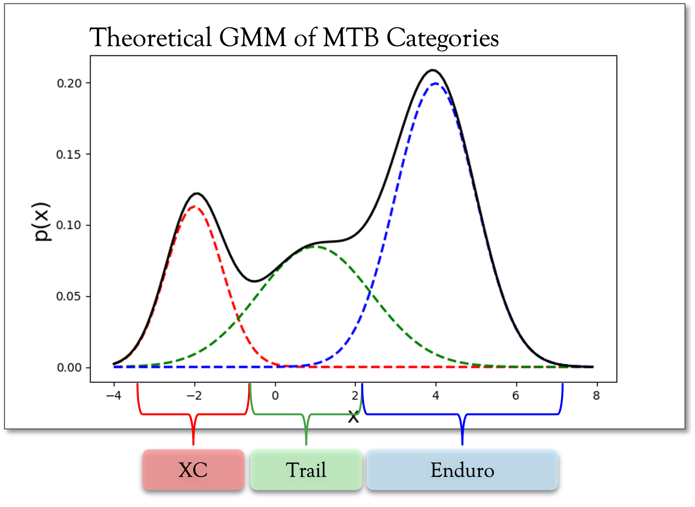
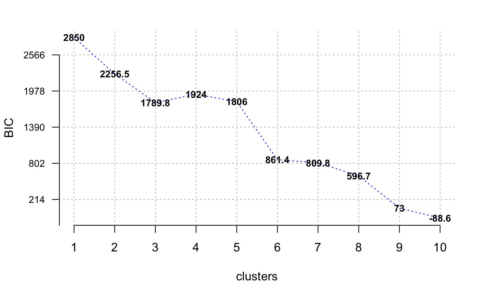

EDA
In this section, we’ll take a look at the 74 mountain bikes in our dataset and some of the 27 features. We’ll try to break down our understanding of the data in terms of label, our target variable that acts as the category for each mountain bike.
Label (Mountainbike Category)
As stated earlier, there are 5 mountain bike categories in our dataset:
- Cross Country (xc)
- Enduro (en)
- Trail (tr)
- All Mountain (am)
- Downcountry (dc)
Let’s look at how many of each we have in our dataset.

We see that out of our 74 bikes, most of them are Trail bikes, with the smallest grouping of bikes being all mountain bikes
Categorical Variables
There are 4 categorical variables we’ll take a look at to better understand our data:
- Setting
- Size
- Front Piston (
f_piston)
- Rear Piston (
r_piston)

- We see that only few bikes have a setting value, which is a feature that allows a rider to slightly adjust the frame’s geometry to hone in rider comfort. Later on, we’ll group by settings for the same bike and average the results to get a more accurate representation of the bikes’ specs.
- Most of the bikes analyzed have 4 rear/front pistons. The two variables seem to be perfectly in-sync, leading us to believe that they’re highly correlated.
But, really, we care about understanding how these different variables interact with our target variable, label. Let’s look at their distribution and look for any patterns.

Here we see:
- The size used for most of the bikes is pretty evenly distributed. For the most part, we attempted to find bikes that are sized to the heights of the authors of this report (approx. 5’8”-5’11”), which tended to be Large-sized bikes; however, for some bikes, like Trail, the specific bike’s company website from which we pulled the data recommended a Medium-sized bike.
- Although most of the bikes have 4-piston brakes, of the bikes that have 2 pistons, most are Cross Country (xc) bikes. 4-piston brakes are known to have higher stopping power which is more important the more the rider intends to ride downhill. However, they come at the cost of additional weight, which most XC riders will avoid at all costs.
Continuous Variables
To analyze the continuous features within our dataset, we built density plots for each of them to better understand their distribution.


~Normally Distributed Variables:
- Chainstay_length
- Fork_travel
- Bb_height
- Seat_angle�
Skewed Variables:
- Head_angle (skewed right)
- Handlebar_width (skewed left)
- Wheelbase (skewed left)�
Multi-Modal Distributed Variables:
- f_rotor_dim / r_rotor_dim
- Stem_length
Like we did for continuous variables, let’s look at the distribution of each of these predictors by our target variable, label, to look for any discernible patterns.


Here we see:
- Cross Country (xc) bikes tend to have the largest head angle and smallest seat angle compared to other bikes. They also have the largest stem length by a significant margin. Overall, Cross Country bikes tend to be the most differentiable from other bike categories;
- All Mountain (am) bikes have a significantly smaller standover height and, along with Enduro (en) bikes, have a much larger reach than other bike categories;
- As is generally expected, Trail (tr) bikes tend to fit mostly in the middle for most of these continuous’ variables. This makes sense given that they tend to split the difference between Cross Country and Enduro bikes.
Average bikes by flip-chip setting
Because some bikes’ websites would have two different “settings” for the same-sized bike, we opted to include both options and average the two together to get one middle-of-the-road estimate for that type of bike. We end up performing this operation for 47% of the bikes in our dataset.
Variation Amongst Featureset
The first thing we’ll do is look to see if any of the features in our dataset are better at explaining the variation amongst the different bikes than other features. That is, it’s completely possible that two features are similar and don’t have much variation in them, even across some of the different bike categories. To do so, we’ll:
- Look for highly correlated features and flag these for potential removal;
- Run Principal Component Analysis (PCA) to see if certain features are better at explaining the variation in our data better than others.
1. Correlation
First, let’s take a look at our most highly correlated features. We’ll use the corrplot() function to better order the highly correlated features by the angular order of their eigenvectors.

Here we see some obvious correlations, for example:
f_piston (front brakes) is perfectly correlated with r_piston (rear brakes), which makes sense since mountain bikes tend to use the same types/spec of brakes for the front vs. rear tires.
fork_travel has a correlation above .95 with: c(“rear_travel”, “fork_travel”). This make sense; for example, rear_travel should be highly correlated with fork_travel.
In all, here are the most highly correlated variables (i.e. variables which have a correlation above .9 or below -.9):
| f_piston |
r_piston |
1 |
| rear_travel |
fork_travel |
0.9608 |
| rear_travel |
wheelbase |
0.9301 |
| rear_travel |
head_angle |
-0.9219 |
| fork_travel |
wheelbase |
0.9195 |
| fork_travel |
head_angle |
-0.9193 |
| head_angle |
seat_angle |
-0.9031 |
There are a solid amount, especially given that we only have 18 continuous columns in our dataset! For now, we’ll opt to include everything. But later on, as we analyze the importance of different features, we’ll look to remove some of the above variables first.
2. Principal Component Analysis (PCA)
Next, we’ll apply PCA to our dataset. In so doing, we’ll have to center and scale our data given how different the ranges are for certain measurements. Let’s take a look at our 5 principal components which explain the largest proportion of variance in the data:
| Standard deviation |
3.024 |
1.262 |
1.164 |
1.071 |
0.8761 |
| Proportion of Variance |
0.538 |
0.09369 |
0.07977 |
0.06745 |
0.04515 |
| Cumulative Proportion |
0.538 |
0.6317 |
0.7115 |
0.7789 |
0.8241 |

We can see that, actually, our 1st principal component alone explains more than half our data. Starting at the 2nd principal component, there’s a distinguishable elbow point. After that, we have a huge drop-off. Starting at our 5th principal component, nearly 82.4% of the data’s variation is properly explained. This leads us to believe that the majority of the variation in our data can be explained by using just 1 principal component!
Let’s take a look at how our top 2 principal components explain the 5 different mountain bike categories:

Here we can see that our top 2 principal components, which explain roughly 63.2% of the variation in our data, are already pretty good representations for describing the different components in our dataset. Even so, the groupings are distinctly plotted on the 2-D graph and it is pretty easy to see how the different bike categories (denoted by color) can be explained using a linear transformation of our existing data.
Clustering
Because we are investigating the validity of mountain bike categories, one approach is to treat this dataset as unsupervised, stripping the bikes of their label and seeing if various clustering algorithms can re-create the 5 distinct labels. To do so, we’ll take a look at the following algorithms:
- K-Means
- Gaussian Mixture Models (GMM)
- Support Vector Machine (SVM)
K-Means
We’ll start by using the K-Means Clustering algorithm, looking at various numbers of clusters (k) and seeing if the bikes logically group together.


Above, we attempted to graph the 3 clusters created using top 2 principal components in our data. For example, we can see Cluster #1 on the right-hand side of the chart, mostly composed of Cross Country bikes (triangles in the chart) and some Downcountry bikes (denoted by squares). Downcountry bikes also seem to be part of Cluster #2 (gray points), along with Trail bikes (denoted by squares with an ‘x’ in them) and some Enduro bikes (denoted by ‘+’). However, Trail bikes also feature heavily in Cluster #3 along with most of the Enduro bikes.
Overall, it’s clear that there is significant overlap between our Clusters, mainly along the Principal Component 1 axis; lending credence to the notion that our bikes can be differentiated along a single, continuous scale.
Note: In the bottom-right of the graph (PC2 < -4), we see two Niner bikes, almost acting as outliers. For a 5’10” rider Niner suggests a size Medium, which results in low reach numbers on its bikes. From the earlier PCA plot, we see that Reach heavily corresponds with PC2, and thus these bikes appear lower on the visual.
Gaussian Mixture Model (GMM)
In this section, we’ll take a more probabilistic model to our clustering. That is, we’ll use a Guassian Mixture Model (GMM) to build out normally distributed subgroupings within our mountain bike dataset, where the densities of each of the subgroupings represents a probability that a bike belongs to that subgrouping. Unlike K-Means, which is a more centroid-based clustering method, GMM is more of a distribution-based clustering method.
Generally, what we expect to see is something like the following:
 where, given a specific type of bike, we can predict the probability, \(p(x)\) that a bike belongs to a category like Cross Country (xc) vs. Trail vs. Enduro.
We’ll run the ClusterR::GMM() function in R to figure out an optimal number of clusters. It uses the expectation-maximization algorithm to perform the probabilistic clustering; at each iteration, it aims to maximize the Bayesian Information Criterion (BIC) to determine an optimal number of clusters.
## iteration: 1 num-clusters: 1
## iteration: 2 num-clusters: 2
## iteration: 3 num-clusters: 3
## iteration: 4 num-clusters: 4
## iteration: 5 num-clusters: 5
## iteration: 6 num-clusters: 6
## iteration: 7 num-clusters: 7
## iteration: 8 num-clusters: 8
## iteration: 9 num-clusters: 9
## iteration: 10 num-clusters: 10

From the plot above, we see that the BIC value decreases generally as the number of clusters increases. However, it appears that the first big drop is when clusters = 3. Let’s try that value out and see which bike categories get mapped into each of the 3 clusters.
| 1 |
1 |
0 |
5 |
11 |
1 |
| 2 |
2 |
1 |
9 |
8 |
0 |
| 3 |
0 |
7 |
0 |
2 |
11 |
Here we see the predicted cluster labels along with the actual 5 bike categories in our data. Trail and Enduro bikes are mostly grouped into Clusters 1 and 2, while Downcountry and Cross Country bikes are grouped into Cluster 3. This would lead us to believe that the original 5 bike categories can be sufficiently explained with fewer clusters.
Even so, let’s see how the probability of each bike belonging to a cluster appears by looking at the densities of each of the associated probabilities for a bike belonging to one of the cluster labels.

Above, we see the expected probability associated with predicting a correct class label. That is, the graph on the left shows how accurate the 3-cluster Gaussian Mixture Model was for predicting bikes fitting into Cluster #1. Generally, the probabilities for the predictions are all above .95; that is, GMM is extremely confident in grouping the different bikes into these 3 clusters.
Multi-class SVM
If we took a slightly different approach and opted to treat our pre-assigned labels as truth, then we could approach this analysis as a supervised learning problem.
For this section, we chose to group the All Mountain and Enduro categories, since they completely overlapped in the PCA chart earlier. We also chose to switch the categorization of the Downcountry category, leaving it as a separate category and grouping it with both Trail and XC to experiment with the results of the model.
We chose to use a Multi-Class Support Vector Machine (SVM), and a grid search to tune the kernel functions and \(\gamma\) values. For each set of parameters, we used 10-fold cross validation on all rows of the data. We decided against holding out data as a test set since we have such limited data, and the 10-fold CV should evaluate the model’s performance on blind data.
Using all of the data, the best SVM model was 73% accurate, using a Radial Basis kernel function with \(\gamma=2.595024\)
Treating the Downcountry category as XC, the best model was 81.6% accurate, with a Radial Basis kernel function with \(\gamma=0.02983647\)
Treating the Downcountry category as Trail, the best model was 80.0% accurate with a Radial Basis kernel function with \(\gamma=3.764936\)
Logically, grouping Downcountry bikes with one of their adjacent categories should naturally lead to an increase in performance; however, this could suggest that the Downcountry category is slightly more skewed towards the XC bikes.
To visualize the results of the SVM classifier, we mapped all features to the 2 Principal Components. In so doing, we were able to achieve a higher accuracy of 75% using a linear kernel, while continuing to treat the Downcountry category as its own distinct category.

In the chart above, we can see how SVM closely maps the actual labels of the bike categories to their predicted categories. There are some misclassifications (when different colored dots appear in a differently shaded region), but overall the shaded SVM feature spaces seem to be accurate representations of the bike categories.
An interesting observation is that most of the boundary lines are more or less vertical, suggesting that most of the variation between classes is along Principal Component 1. We see this deviate between the XC and Downcountry boundary, however the validity of this boundary is still in question since the Downcountry category itself is more or less unofficial. Let’s try remapping Downcountry bikes to the Cross Country (XC) category and review the updated results.

Mapping all Downcountry bikes to XC, the boundaries become almost entirely vertical, again suggesting that the classification of bikes can be attributed to Principal Component 1. The distinct regions appear to be accurate predictors of the 3 bike categories and are simple to explain, which would mean that we have effectively reduced the bias in our model.

{kind=link}
{kind=link}
{kind=link}
{kind=link}
{kind=link}
{kind=link}
{kind=link}
{kind=link}
{kind=link}
{kind=link}
{kind=link}
{kind=link}
{kind=link}
{kind=link}
{kind=link}
{kind=link}
{kind=link}